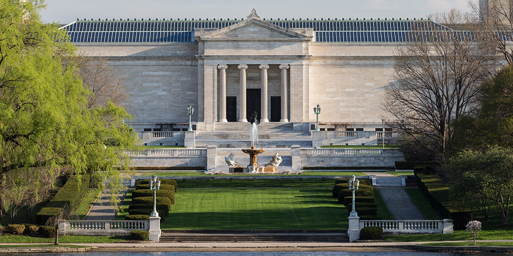
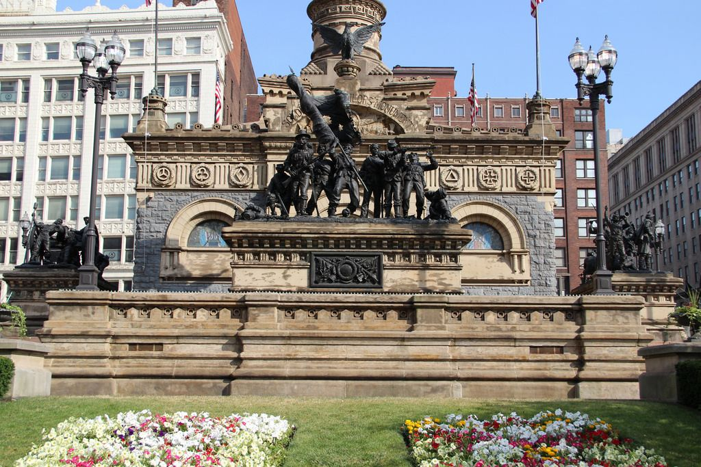
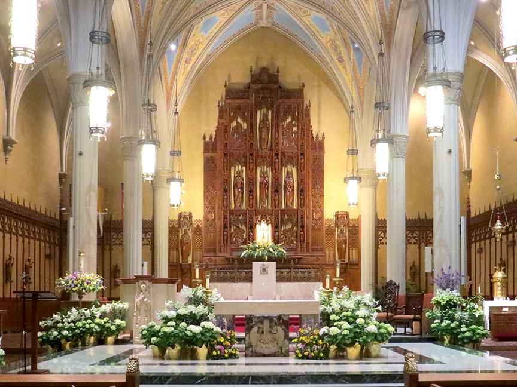

Historical Aspects of Cleveland
The Cleveland Museum of Art was founded in 1913, and contains about 45,000 objects, some dating back 6,000 years ago. This museum is one of the largest and most important Art museums in the U.S. The museum just finished their $350 multi-phase expansion and renovation, adding two new wings that wrap around the central part of the museum. It is free of charge for anyone to go into the museum, although there are some exhibits that you do have to pay to go and see, it is definitely worth seeing at least once. To see what special exhibits are currently showing, you can view and purchase tickets on their site.
The Soldiers' and Sailors' Monument is located in Public Square right in the heart of Cleveland. This giant sculpture is astonishing, and represents the Cuyahoga County residents who fought in the Civil War. The monument had began in 1981, and was finished in 1988 after going through court battles eventually leading to the Supreme Court and protests for having it built. The inside of the building contains more sculptures and the walls contain names of the soldiers who fought in the war.
The Cathedral of St. John is located at: 1007 Superior Ave, Cleveland, OH 44114. This cathedral was built in the year of 1852, and is still looking as beautiful as ever, inside and out. The cathedral offers tours upon request, but you can also attend Mass any day of the week during their specific hours shown here The cathedral welcomes anyone to come in for mass or simply to view or meditate on your own, with it's peaceful, calm, and relaxing atmosphere.
